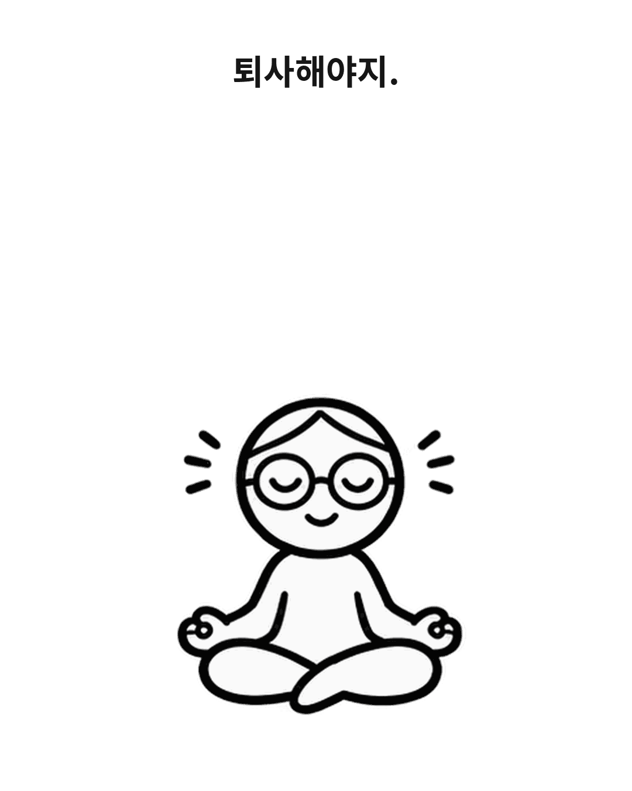
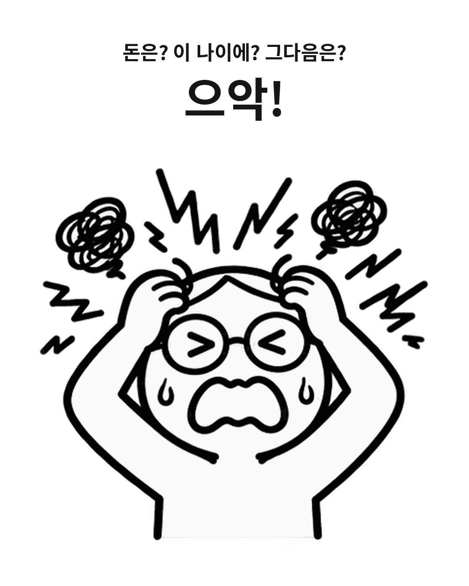
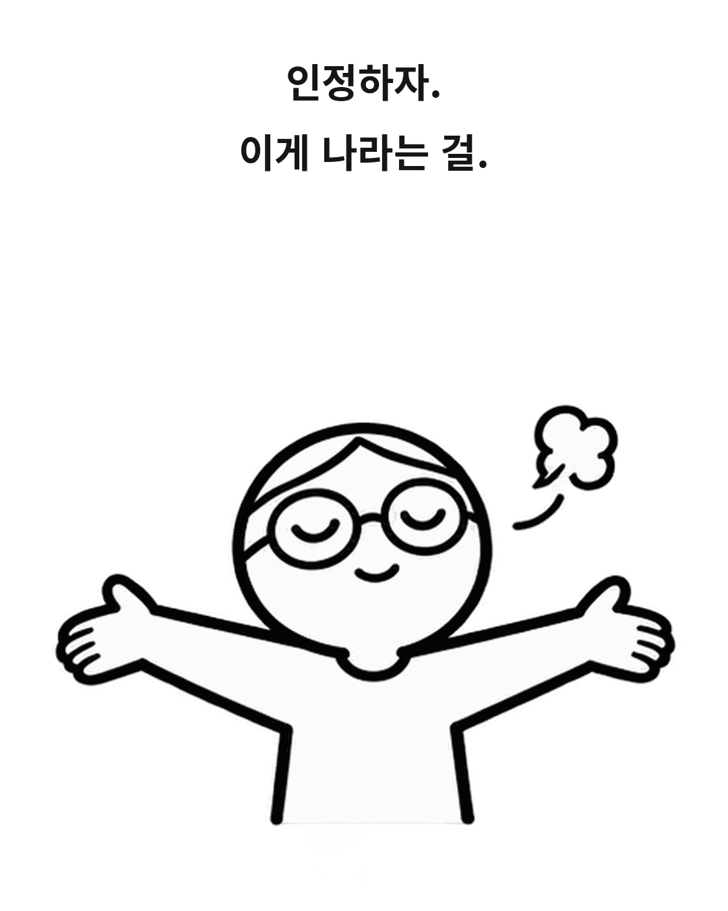
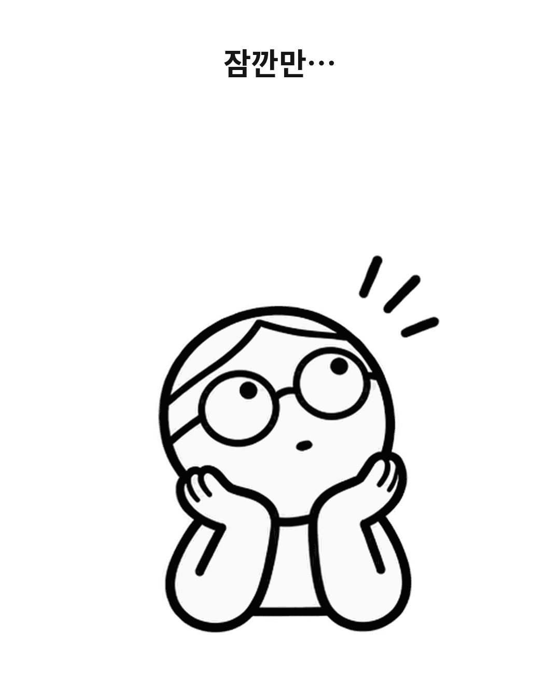
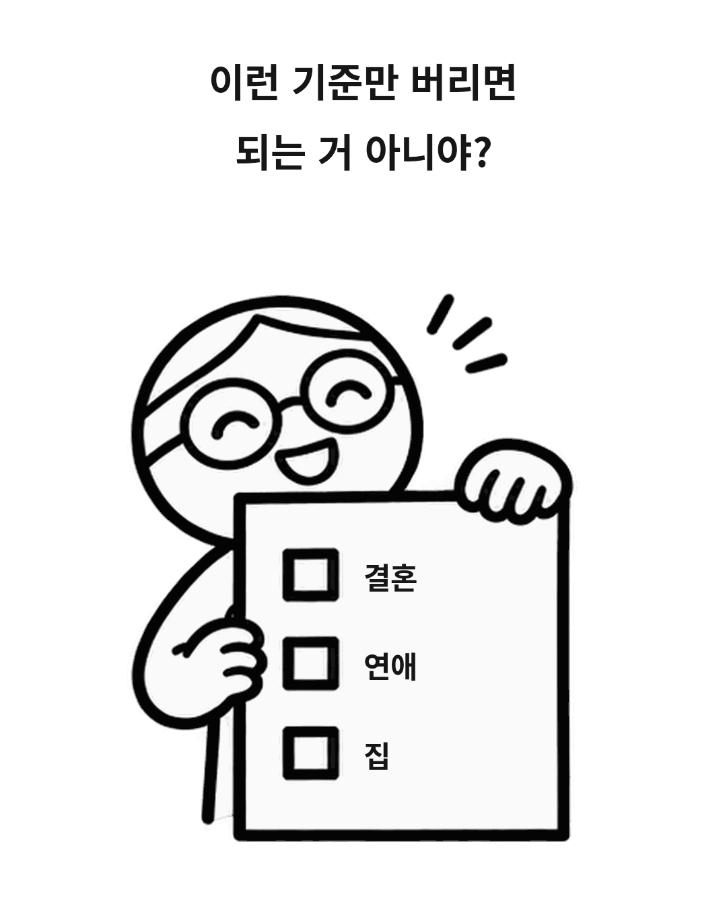
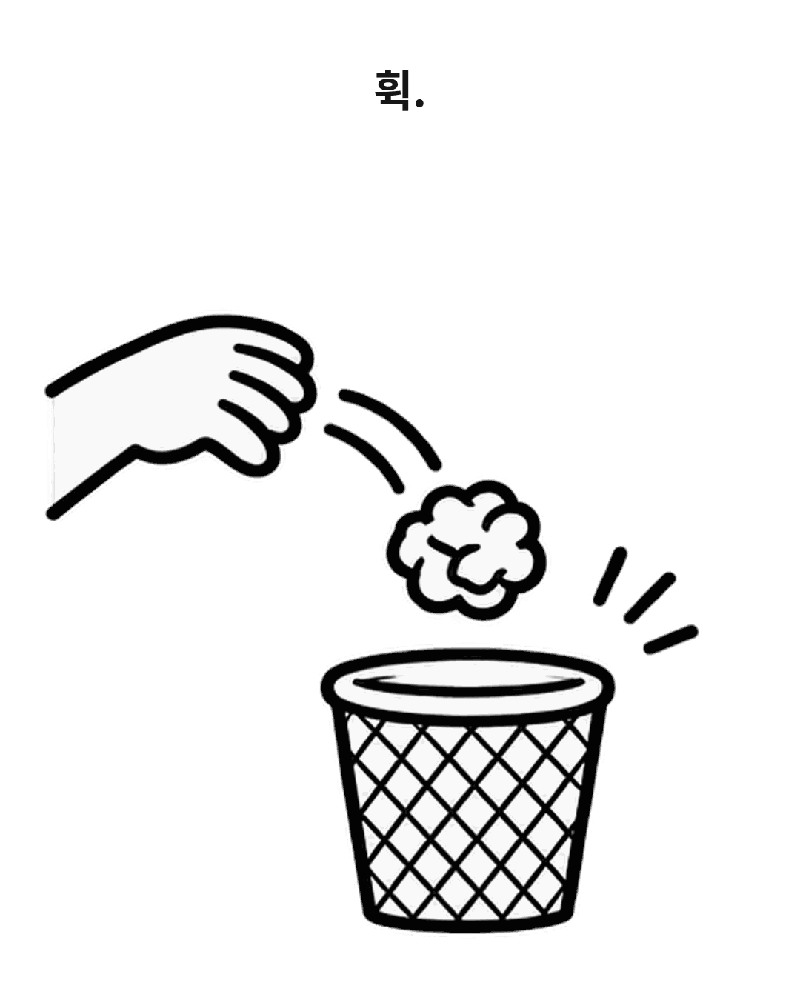
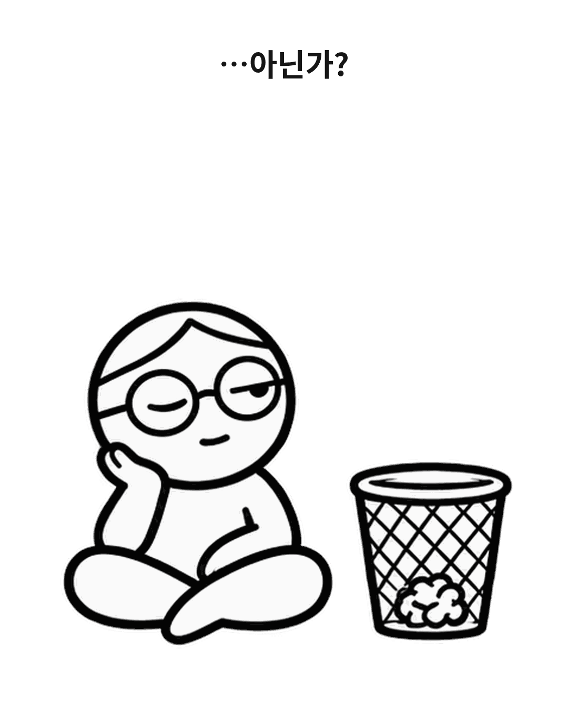

인스타툰 · 7컷 구성
또! 또또또…? 퇴사?!
명상 중에 퇴사를 결심하고, 걱정에 휩쓸렸다가 나만의 기준을 내려놓아 보는 이야기예요.
일상 인스타툰
우당탕의 주인공은 모든 에피소드에서 둥근 안경, 머리 안쪽의 가르마, 단순한 몸과 연필선을 유지해요. 표정·자세·소품으로 장면을 구분해요.
제작 순서
퇴사편의 최신 7컷과 동그라미 편을 각각 열어볼 수 있어요.
게시용 · 01–07
아래 일곱 장을 번호대로 저장하면 돼요. 대사와 효과음을 넣은 1080 × 1350 투명 PNG예요.







01 · 기존 대본
퇴사, 떡볶이, 출퇴근, 동그라미 편 등 모든 새 컷의 주인공은 제작 라이브러리의 둥근 안경 캐릭터를 기준으로 그려요.
{% include life-scripts.html %}02 · 그리기 참고
둥근 안경과 가르마 캐릭터로 그린 작품 시안과, 컷에 얹어 쓸 투명 포즈를 여기서 골라보세요.
04 · 재사용 소재
가운데가 투명한 1080 × 1350 PNG예요. 그림 위에 올리고 컷 크기에 맞춰 늘리면 돼요. 밝은 컷에는 검정, 어두운 컷에는 흰색을 골라보세요.
![{{ row[1] }}]({{ asset }}.png)
05 · 게시물 기획